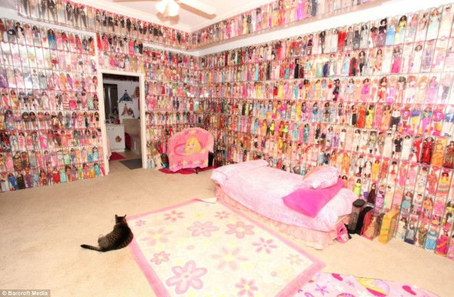
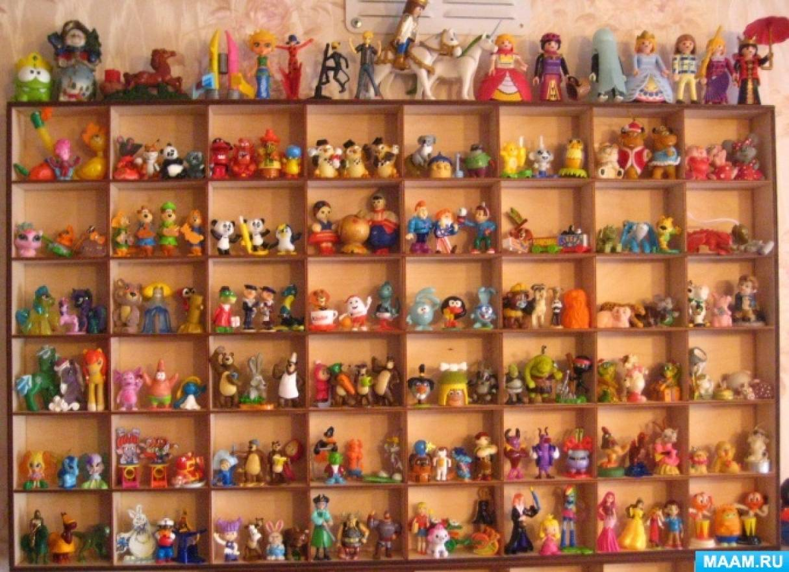
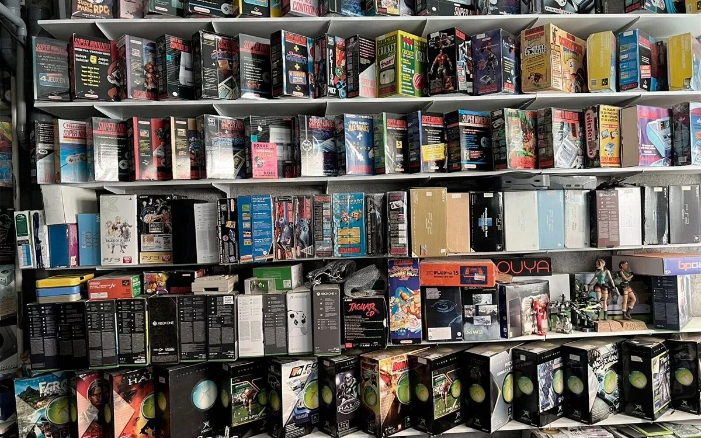
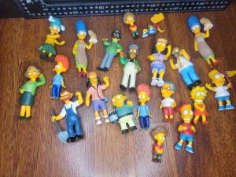

Самая большая коллекция Барби
Дженис Риггс (США) собрала более 15 000 кукол Барби с 1960-х годов.

Самая большая коллекция игрушек из Киндера
Джанлука Марко (Италия) владеет более 12 000 фигурками из яиц Kinder Surprise.

Самая большая коллекция игровых консолей
Джонатан Сантьяго (США) собрал 2 400+ консолей, включая редкие прототипы.

Самая большая коллекция предметов по «Симпсонам»
Мэтт Уолтман (Канада) имеет более 5 000 вещей, связанных с «Симпсонами».